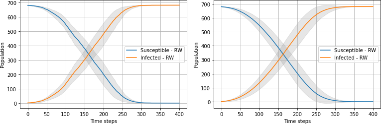
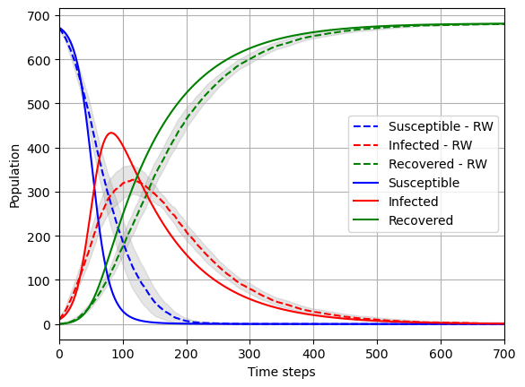

Coronavirus Goes Randomly Viral
Nov 14, 2022
Introduction
In this project you are going to study the spread of an epidemic disease using random walk simulations [1] [2] [3] [4] and you are going to compare your results with classical compartment models [5].
The random-walk approach is an example of agent-based models [6] [7] [8], in which each individual (or a small group of individuals) is represented explicitly. Classical compartment models are much coarser, and do not seek to capture the behaviour of individuals. Typically, they use ordinary differential equations (ODEs) to capture the dynamics of how a disease spreads in the population.
Regardless of the approach taken, the total population can, at any given time, be partitioned into compartments based on a set of possible "disease states", e.g., "Susceptible", "Infected", "Recovered", and "Dead". The part that is different is how we model the "flow" of people from one compartment to another.
To start out simple, we shall first consider the SI-model depicted in figure 1. Later, we will extend the model by adding more compartments.
Figure 1: The SI-model: All individuals are either "Susceptible" or "Infected". Once you become sick, there is no recovery.

Exercise 1: Random walk \( SI \)-model
For the random walk approach, the scenario we shall consider is that of an isolated population in a restricted spatial area, e.g., an island, a boat [9], or a city surrounded by walls. Specifically, we model the local geography with a 2-dimensional, rectangular lattice composed of \( n_x\times{n_y} \) equally spaced nodes (figure 2). Each node represents a specific location, and during a simulation people move randomly between neighbouring nodes.
Each time step we shall require that all walkers move completely randomly (i.e., with a 25 percent chance) in one of the following four directions: North, South, East, or West. That is, a walker goes either in the x-direction or in the y-direction, but not both at the same time (diagonal moves are prohibited). After walkers have moved, each healthy person present at a location will "encounter" every infected person at the same location and risk being infected. All infectious individuals has the same probability, \( q \), of infecting a susceptible person.
Unless otherwise is noted explicitly, we will set \( n_x=n_y=50 \) and assume there are \( N=683 \) people in the population. Also, the probability of getting infected is by default assumed to be \( q=0.9 \).
Figure 2: Example illustration of walkers moving on a lattice during one time step. In the plot, \( q \) is the probability that a walker is infected.

Part 1.
- Write a class (or function) that can be used to conduct a single simulation of the random walk algorithm for the SI-model.
We recommend that you look at all exercises before starting to code, because it is expected that the final simulator you hand in can be used for every scenario you model; that is, you will lose points if you make multiple solvers. Since your program could become quite large, it is crucial that you include sufficient documentation to your code. You can go a long way towards this goal by choosing intuitive names for classes, functions, and variables
For this particular exercise, you will get full marks as long as the \( SI \)-model works as intended. At minimum, your implementation of the SI-model has to perform the following steps:
- At \( t=0 \), place walkers randomly on the \( n_x\times{n_y} \) rectangular lattice.
- For each time step, update the position of all walkers, then:
- Check if they are at a legal position; for those that are not, revert back to previous position.
- For each S-I encounter, check whether the healthy person was infected. If yes, update the disease state of the healthy individual from \( S \) to \( I \).
It is also a very good idea to create a function that plots the current location of all walkers on the "map" with a scatter plot. Use different colors to distinguish between people in different compartments (e.g., healthy and sick people). However, such a function should not be automatically invoked at each time step, because that will clutter your notebook with figures. A good default could be to plot every \( n \)-th timestep where \( n \) is "large enough", or to require the user to specifically input specific time steps at which to visualize the map.
If you want, you can place your simulation class (or function) into a separate .py file, and simply import it at the top of your Jupyter notebook.
The appendices at the back contain suggestions for how you can structure your code so that it becomes easy to extend your model with additional compartments. In particular, Appendix B contains tips on how to make an efficient implementation.The random walk simulations are very CPU-intensive, thus speed matters in this project!
Part 2.
Suppose there is a single infectious individual initially, \( I(0) \) = 1.
- Run the (default) random walk SI-model forward in time repeatedly; at least 100 times. For each run, take 300 time steps. (If your code is fast, you should experiment with running the code even more times, and longer if necessary)
- For each time step, calculate 1) the sample mean and 2) the sample standard deviation of the number of healthy (S) and sick (I) people in the population.
- Create a figure showing the expected time-development of the two populations. Make sure to include the computed uncertainty in the figure.
With a correct implementation of the specified model, you should get plots that resemble figure 3.
Figure 3: Left: average of 10 simulations of the random walk \( SI \)-model. Right: average of 100 simulations. The gray shaded lines represent plus/minus one standard deviation.

Coding tip: To visualize the uncertainty, the above plots used the fill_between. function in matplotlib.
Part 3.
- Repeat the exercise when \( I(0)=10 \). What is different now?
Exercise 2: Compare random walk and ODE-based models
The ODE-based, deterministic SI-model is:
$$ \begin{align} \tag{1} \frac{\mathrm{d}S(t)}{\mathrm{d}t} &= -\beta(t)\cdot\frac{S(t)I(t)}{N}\\ \tag{2} \frac{\mathrm{d}I(t)}{\mathrm{d}t}&=\beta(t)\cdot\frac{S(t)I(t)}{N}\,, \end{align} $$where \( S(t) \) is the number of susceptible people at time \( t \) (people at risk of infection), \( I(t) \) denotes the number of infected people, \( N=S(t)+I(t) \) is the total population size, and \( \beta \) can be viewed an effective contact (disease transmission) rate; the total number of effective contacts made by any individual per unit time, multiplied with the probability of infection. The actual rate at which susceptible individuals become infected are given by the product \( \beta(t)I(t)/N \), sometimes referred to as the force of infection. See Appendix C: Derivation of \( SI \)-model for a detailed mathematical derivation of the \( SI \)-model.
If we assume a constant \( \beta \), the analytical solution is
$$ \begin{align} \tag{3} I(t)&=\frac{N}{1+\frac{S_0}{I_0}\exp(-\beta{t})}\,, \end{align} $$where \( S_0=S(0) \) is the number of healthy people at \( t=0 \), and \( I_0=I(0) \).
If we assume that \( \beta \) is constant, we are making several very strong assumptions:
- People make the same number of contacts regardless of the population size.
- People make the same number of contacts independent of time.
- The probability of becoming infected never changes.
In reality, \( \beta \) is strongly time-dependent and accounts for a lot of biomedical, physical, and sociological factors. For example, in the beginning of an outbreak, \( \beta \) is likely to be large, because people might not yet understand the severity of the situation, or they may be in denial. As people start to realize the danger and fight back against the disease, \( \beta \) will most likely decrease. However, as we have seen with COVID-19, new strains of the virus may appear and cause transmission rates to go up again. Another complication is that people perceive the threat from the virus very differently, and at least in in some countries, this seems to be influenced by political factors.
Part 1.
Consider the random walk simulations conducted in Exercise 1, Part 2 with \( I(0)=10 \). We wish to find a representative \( \beta \) based on the results ("observations"). For a given simulation, we combine equation (1) with a first order approximation of the derivative to yield
$$ \begin{equation} \tag{4} \beta_n\cdot\Delta t \approx -\frac{(S(t_n)-S(t_n-\Delta t))N}{S(t_n)I(t_n)} =-\frac{(S_n-S_{n-1})N}{S_n I_n}\,, \end{equation} $$where \( \beta_n \) is an estimate for \( \beta(t) \) at the end of the \( n \)-th time step, \( t_n=n\Delta{t} \), \( n=1, 2, \ldots \).
- For each run of the random walk model and every time step \( n>=1 \), calculate \( \beta_n\Delta t \) using equation (4).
- Use the resulting 2D array of values to find a single, representative (constant) \( \beta \). You could to this, e.g., by calculating an appropriate mean or median value.
- Apply the analytical SI-model, equation (1), with the \( \beta \) you just found. Compare it to the mean number of infected individuals from the random walk simulations.
Alternatively, you could try to construct a non-constant function \( \beta=\beta(t) \) based on the random walk data. However, then you need to find another solution to the ODE-system (1)-(2), because equation (1) is no longer valid.
The time scale is determined from the number of susceptible-infectious encounters per time unit. Thus, in the random walk simulations we can only determine the product \( \beta\Delta t_\text{RW} \). If we have data available on the spread of the disease, we can use the data to determine \( \beta \) after which we can estimate \( \Delta t_\text{RW} \).
Part 2.
We would like to include the effect of recovery from the disease into both models. The SIR-model is obtained from the SI-model by adding one more compartment to represent the "recovered" state. For simplicity, we shall assume that at the end of each time step, every infected person has a small probability of recovery, \( p_\text{recover} \).
- Extend your random walk implementation to handle the \( SIR \)-model. By default, assume that no individuals recover, \( p_\text{recover}=0 \), thus recovering the \( SI \)-model.
Coding tip: For each infected person, pick a random number between 0 and 1; if it is smaller than \( p_\text{recover} \), update the state of the person to the recovered state.
Part 3.
The ODE-based, deterministic SIR-model is
$$ \begin{align} \tag{5} \frac{\mathrm{d}S(t)}{\mathrm{d}t}&=-\beta(t)\cdot\frac{S(t)I(t)}{N}\\ \tag{6} \frac{\mathrm{d}I(t)}{\mathrm{d}t}&=\beta(t)\cdot\frac{S(t)I(t)}{N}-\frac{1}{\tau_\text{sick}}\cdot I(t)\\ \tag{7} \frac{\mathrm{d}R(t)}{\mathrm{d}t}& = \frac{1}{\tau_\text{sick}}\cdot I(t)\,, \end{align} $$where \( R(t) \) is the number of "Recovered" individuals at time \( t \) and \( \tau_\text{sick} \) represents the mean time of infection, i.e., the time until recovery. If \( \tau_\text{sick}\to\infty \), a person stays sick forever, and equations (5)-(7) reduce to the \( SI \)-model.
- Run the random walk \( SIR \)-model with \( I(0)=10 \) and \( p_\text{recover}=0.01 \). For the other input parameters, use the same values as you used before.
- To get representative results, make sure you conduct many model runs. Plot the average number of susceptible, infected and recovered as a function of time. Visualize the uncertainty in your plots.
In figure 4 a typical result is shown, when values for \( \beta \) and \( \tau \) are used in the ODE model.
Figure 4: SIR Random walk model and comparison with ODE compartment model.

Part 4
The following code provides an implementation of the deterministic \( SIR \)-model (along with necessary package imports, which you should place at the top of your notebook):
import scipy as sp
import scipy.integrate
def SIR_model(t, *, beta, tau_s, N=683, I0=1, R0=0):
def rhs(X, t):
S, I, R = X
return [-beta*S*I/N, +beta*S*I/N - I/tau_s, +I/tau_s]
X0 = [N-I0-R0, I0, R0]
sol = sp.integrate.odeint(rhs, X0, t)
return sol
- As you did with the \( SI \)-model, use the random walk output to calculate representative values for \( \beta \) and \( \tau_\text{sick} \).
- Compare the random walk \( SIR \)-model to the ODE-based \( SIR \)-model using the \( \beta \) and \( \tau_\text{sick} \) you found.
Exercise 3: Implement your own scenario
For the final part of the project, you are going to implement your own scenario. Below are some possible avenues for you to explore:
- Add vaccination, and run several waves of infection.
- Allow people to die from the disease.
- Distinguish between old and young people. Let older people have a larger probability of dying. You can also let the old population have a probability of not moving at all during a time step, and/or to only move in a selected area (presumably, near "home").
- Add an incubation time, i.e., a certain time interval between when a person first becomes infected and when that person actually becomes sick and can infect others.
- Study effects of quarantine. This might be especially interesting to look at if your distinguish between asymptomatic and symptomatic infected individuals.
Clearly, there are infinitely many choices you may make when it comes to model features, both individually and in combination. Therefore, it is very important that you state your assumptions carefully when presenting your scenario, and that you document your code accordingly.
It is also crucial that you illustrate your findings with one or more figures, and that you discuss how your model scenario compares to the previously investigated cases.
If you are able to relate your scenario to the real world (e.g., by comparing to relevant empirical data), you can score some bonus points on this exercise!
Appendix A: How to implement the random walk?
As in project 2, we strongly recommend that you create a single simulator class responsible for running your model from start to finish. This allows different class functions to re-use the same variables, instead of having to pass them around all the time. At the same time, you avoid using global variables, which can be a source of hard-to-find bugs, and make your program hard to understand. Another advantage of using classes is that it becomes trivially simple to conduct parallell simulation runs, using either identical or variable model input parameters, which will be needed for this project.
Below is a suggestion for how you may start writing the __init__ method
of such a class:
class RandomWalkEpidemicSimulator:
"""
Class used to model the spreading of a contagious disease in a
population of individuals with a 2D random walk.
Each walker has a disease state which is represented by an
integer Enum. Also, a set of integer (x, y)-coordinates are
stored for each walker. The possible coordinates are:
{0, 1, ..., Lx-1} in the x-direction
{0, 1, ..., Ly-1} in the y-direction
It is only possible to move North, South, East, or West. If a
walker attempts to move outside of the physical domain, nothing
happens (i.e., a "bounce-back boundary condition" is enforced).
"""
def __init__(self,
population_size,
no_init_infected=1,
nx=50,
ny=50,
q=0.9):
"""
:param population_size: The total number of people (N).
:param no_init_infected: The number of infected people at t=0.
:param nx: The number of lattice nodes in the x-direction
:param ny: The number of lattice nodes in the y-direction.
:param q: The probability of infection (0 <= q <= 1).
"""
self.N_ = population_size
self.I0_= no_initially_infected
self.nx_= nx
self.ny_= ny
self.infection_probability_ = q
As you work through the project, you will gradually add more content to the
class; inside the __init__ function, as well as in other functions.
Position of Walkers
At each time step, we need to know the positions of all walkers. This becomes simple if we store the walker \( (x,y) \)-coordinates in a 2D NumPy array. To generate random starting positions, we simply draw one \( x \)-coordinate and one \( y \)-coordinate for each walker:
self.Walkers_ = np.random.randint(0,
[self.nx_, self.ny_],
size=(self.N_, 2))
To understand what the code does, choose some small values for \( n_x \), \( n_y \), and \( N \), and inspect the result.
Move walkers
It is important that the walkers move randomly, and only one step in either the \( x \)- or the \( y \)-direction. There are many ways to achieve this. One method is to draw a random integer \( u \) between 1 and 4, and to say, e.g.:
- If
u==1, move East: add \( [1, 0] \) to the \( (x, y) \)-coordinates, - If
u==2, move North: add \( [0, 1] \), - If
u==3, move West: add \( [-1, 0] \), - If
u==4, move South: add \( [0, -1] \).
As an example, suppose we have five walkers and moreover that we have already drawn the following (random) steps:
next_steps = np.array([[0, 1], [1, 0], [1, 0], [0, 1], [-1, 0]])
According to the scheme proposed above, these steps corresponds to the first and fourth walkers moving North, the second and third moving East, and the fifth moving South. Since all directions are stored in array of the same size as the population, we can update the walker positions simultaneously with a simple addition:
self.Walkers_ += next_steps
An alternative method is to update each of the four directions separately. A situation where this could be relevant is when we have drawn the random integers representing directions, but have not yet converted them into \( (x, y) \)-coordinate changes:
proposed_directions = np.array([2, 1, 1, 2, 3])
We can use boolean masking to find out which walkers move in which direction:
move_east = (proposed_directions == 1)
move_north = (proposed_directions == 2)
move_west = (proposed_directions == 3)
move_south = (proposed_directions == 4)
Finally, we update the coordinates:
Walkers_[move_east] += [1, 0]
Walkers_[move_west] -= [1, 0]
Walkers_[move_north] += [0, 1]
Walkers_[move_south] -= [0, 1]
Revert illegal moves (Bounce-back condition)
Before checking for new infections, we need to make sure that none of the walkers are outside of the grid. We can achieve this by keeping track of walker coordinates from the previous time step: For each walker, we check whether that walker is at a legal position; if not, revert back to the old coordinates. This is often called a bounce-back boundary condition.
To extract the old \( (x,y) \)-coordinates, we can type:
self.Walkers_Old_ = self.Walkers_.copy()
Note the use of copy() here. If we had written
self.Walkers_Old_ = self.Walkers_ # Wrong code!!!
it would not work, because arrays are
mutable
objects in Python.
This means that if Walkers_ had been assigned directly to Walkers_Old,
both variable names would point to the same underlying object in memory.
Since the arrays contain objects of an immutable type (int), one way to avoid
this problem is to create a shallow copy with copy(). In other situations,
a deepcopy() operation might
be needed; e.g., if we stored objects of a custom class in the Walkers_ array
(instead of integers).
To check for legal positions, the most obvious thing to do is to use a for loop:
# Note: Assumes we have already created a class (instance) function
# "is_at_illegal_position" that checks whether the coordinates
# of a given walker is valid.
for idx in range(self.N_):
if self.is_at_illegal_position(idx):
self.Walkers_[idx] = self.Walkers_Old_[idx]
# Remember to save the new positions for the next time step
self.Walkers_Old_ = self.Walkers_.copy()
However, this method is likely to be very slow. Instead you might want to use boolean masking to correct the position of each walker without using for loops. See Appendix B for more details.
Figure 5: An illustration of the bounce-back boundary condition. The wall is located to the east, and a move in the east direction is illegal.

State of Walkers
We still have no information about the state (susceptible, infected, recovered, dead, etc.) of each individual walker. To handle this, we suggest introducing a set of named integer constants. These could for example be members of the simulator class (either class attributes or instance attributes), e.g.:
self.SUSCEPTIBLE_ = 0
self.INFECTIOUS_ = 1
self.RECOVERED_ = 2
Alternatively, they could be stored in a separate enumeration class:
from enum import Enum
class DiseaseState(Enum):
SUSCEPTIBLE = 0
INFECTIOUS = 1
RECOVERED = 2
The following example shows how you can use this kind of approach in your code:
# First, let all walkers be in the susceptible compartment:
self.State_ = np.full(self.N_, self.SUSCEPTIBLE_)
# Next, change walker number 0, 1, 2, ..., I0-1 to be infectious:
self.State_[0:self.I0_] = self.INFECTED_
As the simulation is progressing, the State_ array will be continually updated.
At any given time, we can count the total number of infected, recovered etc.
by
no_susceptible = np.sum(self.State_ == self.SUSCEPTIBLE_)
no_infectious = np.sum(self.State_ == self.INFECTIOUS_)
no_recovered = np.sum(self.State_ == self.RECOVERED_)
When using named integers (Enums), the code becomes much easier to read than
if you work with hard-coded integers; it means you will never have to
remember that 0=SUSCEPTIBLE and 1=INFECTIOUS etc..
Also, the approach can easily handle the addition of more compartments,
or changing the numbering scheme later on. For instance, suppose
you want to use to the following numbering instead:
self.SUSCEPTIBLE_ = 0
self.EXPOSED_ = 1
self.INFECTIOUS_ = 2
self.RECOVERED_ = 3
self.DEAD_ = 4
If you wrote your code referring directly to the integers, you would have
to change each occurrence of 1 to 2, and each occurence of 2 to 3.
Obviously, this is much more error-prone than the Enum-approach.
Checking for new infections
The "collision step" is crucial for performance. A naive implementation would be something like the following:
def collide_extremely_slowly(self): # note: class (instance) function
# Get (x,y)-coordinates of susceptibles & infectious people
S_coord = self.Walkers_[self.State_== self.SUSCEPTIBLE_]
I_coord = self.Walkers_[self.State_ == self.INFECTIOUS_]
no_infected = len(I_coord)
for infected_idx in range(no_infected):
for walker_idx in range(self.N_):
walker_is_susceptible = (self.State_[walker_idx] == self.SUSCEPTIBLE_)
infected_at_same_location = np.all(I_coord[infected_idx] == Walkers_[walker_idx])
if walker_is_susceptible and infected_at_same_location:
q = np.random.uniform(0, 1)
if q < self.infection_probability_:
self.State_[walker_idx] = self.INFECTIOUS_
With the above approach, we are doing a lot of superfluous checks, every single time step of every simulation. In the best case scenario, we are checking each walker once every time step (this happens when there is a single infected person). In the worst case scenario, when everyone is infected, we are checking \( N^{2} \) combinations of walkers. With \( N=683 \), this means we are doing 466489 comparisons each and every time step! Obviously, this is not feasible.
The strategy of starting by looping over infected individuals is probably smart, however; at least initially, when there are few of them. However, you will need to avoid doing pointless checks.
Appendix B: Speeding up the code
To save time, you should only re-run simulations when you have to. Be careful that you do not perform unnecessary tasks inside the main simulation loop; for example, most plots and statistical calculations should be done after finishing the simulations, outside of the main solver. To be able to do that, you will need to store selected simulation results. It might be helpful to store some data into text files for later retrieval and post-processing.
That said, a good rule is to never optimize code too early; first, make sure the implementation works as expected, without thinking too much about performance. Later on, you might find out that the code runs too slowly and then you can try to fix that. Below are some tips on what could be improved.
- It is important to avoid loops whenever possible. For instance, drawing random numbers one at a time inside a loop tends to be very slow:
for k in range(0, N):
x = np.random.uniform(0, d)
y = np.random.uniform(0, d)
Instead, take advantage of built-in functionality in Numpy to draw all the numbers at once:
x = np.random.uniform(0, d, size=N)
y = np.random.uniform(0, d, size=N)
- When locating walkers at illegal positions, or finding positions where infectious and susceptible individuals meet (this step is crucial for speed!), consider using numpy.where.
- You can also use boolean masking, for example:
too_large_x = self.Walkers_[:, 0] >= self.nx_
too_small_x = self.Walkers_[:, 0] < 0
wrong_x = np.logical_or(too_large_x,too_small_x)
# alternatively you can use
wrong_x = too_large_x | too_small_x # boolean "OR" applied elementwise
- Another example: Suppose we have created a boolean array of size
N_calledat_illegal_pos, where an entry is True iff the corresponding walker is outside the grid. Then, we can correct the illegal moves in a single line without a loop:
self.Walkers_[at_illegal_pos] = self.Walkers_Old_[at_illegal_pos]
- Numba translates python functions to optimized machine code, and might be something to look into.
A final tip (that might prove wrong)
- While it is often smart to use classes, avoid creating too many of them. For example, it might be tempting to represent individual walkers with a class, but our guess is that this will slow down the code considerably unless one is very careful. Accessing a class and its members adds extra overhead, which is why we prefer the approach of using arrays to hold information about the walkers.
Appendix C: Derivation of \( SI \)-model
To derive equation (1) in the main text, we start by making some observations:
- During each time interval \( \Delta{t} \), a certain number of individuals will come into contact with each other.
- We only care about susceptible (healthy) - infected encounters, because that is the only scenario in which the number of infected people can increase.
- Whenever a healthy person meets an infected person, there is a certain probability that the healthy person becomes infected.
We shall take our imagined population to be well mixed, meaning that pairs of individuals interact with equal probability. Let \( \mathcal{C}(N) \) denote the rate at which any individual in the population contacts any another individual, i.e., the average number of contacts made per unit time. We calculate the change in the healthy population from time \( t \) to \( t+\Delta{t} \) from
$$ \begin{align} S(t+\Delta t)-S(t) = -\mathcal{C}(N)\cdot{\Delta t} \cdot{p}\cdot{q}\cdot{S(t)}\,, \tag{8} \end{align} $$where \( p \) denotes the conditional probability that a given contact is between a susceptible and infected individual, and \( q \) is the probability that such an encounter leads to disease transmission. Because of the well-mixed condition, we set \( p=I(t)/N \). The remaining challenge is to estimate \( \mathcal{C}(N) \) and \( q \). By merging the two factors into a single parameter, \( \beta=\beta(t) \), we get
$$ \begin{align} S(t+\Delta t)-S(t) = -\beta(t)\cdot{\Delta t}\cdot\frac{S(t)I(t)}{N}\,, \tag{9} \end{align} $$Finally, by dividing by \( \Delta t \) and letting \( \Delta t \rightarrow 0 \), we obtain the following ordinary differential equation (ODE):
$$ \begin{align} \tag{10} \frac{\mathrm{d}S(t)}{\mathrm{d}t} =-\beta(t)\cdot\frac{S(t)I(t)}{N} \,. \end{align} $$Similarly, the evolution of the sick population is given by:
$$ \begin{align} \tag{11} \frac{\mathrm{d}I(t)}{\mathrm{d}t} =+\beta(t)\cdot\frac{S(t)I(t)}{N} \,. \end{align} $$This last equation can also be derived at once from the relation \( N=S(t)+I(t) \).
Guidelines for project submission
You should bear the following points in mind when working on the project:
- Start your notebook by providing a short introduction in which you outline the nature of the problem(s) to be investigated.
- End your notebook with a brief summary of what you feel you learned from the project (if anything). Also, if you have any general comments or suggestions for what could be improved in future assignments, this is the place to do it.
- All code that you make use of should be present in the notebook, and it should ideally execute without any errors (especially run-time errors). If you are not able to fix everything before the deadline, you should give your best understanding of what is not working, and how you might go about fixing it.
- Avoid duplicating code! If you find yourself copying and pasting a lot of code, it is a strong indication that you should define reuseable functions and/or classes.
- If you use an algorithm that is not fully described in the assignment text, you should try to explain it in your own words. This also applies if the method is described elsewhere in the course material.
- In some cases it may suffice to explain your work via comments in the code itself, but other times you might want to include a more elaborate explanation in terms of, e.g., mathematics and/or pseudocode.
- In general, it is a good habit to comment your code (though it can be overdone).
- When working with approximate solutions to equations, it is very useful to check your results against known exact (analytical) solutions, should they be available.
- It is also a good test of a model implementation to study what happens at known 'edge cases'.
- Any figures you include should be easily understandable. You should label axes appropriately, and depending on the problem, include other legends etc. Also, you should discuss your figures in the main text.
- It is always good if you can reflect a little bit around why you see what you see.
Bibliography
- S. Triambak and D. Mahapatra. A Random Walk Monte Carlo Simulation Study of COVID-19-Like Infection Spread, Physica A: Statistical Mechanics and its Applications, 574, pp. 126014, 2021.
- E. A. Codling, M. J. Plank and S. Benhamou. Random Walk Models in Biology, Journal of the Royal Society Interface, 5(25), pp. 813-834, 2008.
- N. T. Bailey. The Simulation of Stochastic Epidemics in Two Dimensions, Proceedings of the Fifth Berkeley Symposium on Mathematical Statistics and Probability, 1967.
- D. Kelker. A Random Walk Epidemic Simulation, Journal of the American Statistical Association, 68(344), pp. 821-823, 1973.
- W. O. Kermack and A. G. McKendrick. A Contribution to the Mathematical Theory of Epidemics—I, Proceedings of the Royal Society of London. Series A, Containing Papers of a Mathematical and Physical Character, 115(772), pp. 700-721, 1927.
- L. Perez and S. Dragicevic. An Agent-Based Approach for Modeling Dynamics of Contagious Disease Spread, International Journal of Health Geographics, 8(1), pp. 1-17, 2009.
- J. Badham, E. Chattoe-Brown, N. Gilbert, Z. Chalabi, F. Kee and R. F. Hunter. Developing Agent-Based Models of Complex Health Behaviour, Health & Place, 54, pp. 170-177, 2018.
- C. C. Kerr, R. M. Stuart, D. Mistry, R. G. Abeysuriya, K. Rosenfeld, G. R. Hart, R. C. N\'u\~nez, J. A. Cohen, P. Selvaraj, B. Hagedorn et al.. Covasim: an Agent-Based Model of COVID-19 Dynamics and Interventions, PLOS Computational Biology, 17(7), pp. e1009149, 2021.
- Wikipedia. COVID-19 Pandemic on Diamond Princess, 2021, (Accessed on 19/11/2021), https://en.wikipedia.org/wiki/COVID-19_pandemic_on_Diamond_Princess.